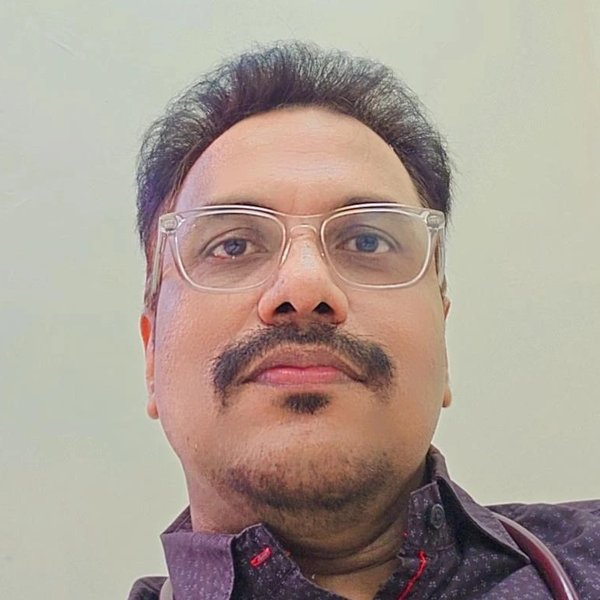
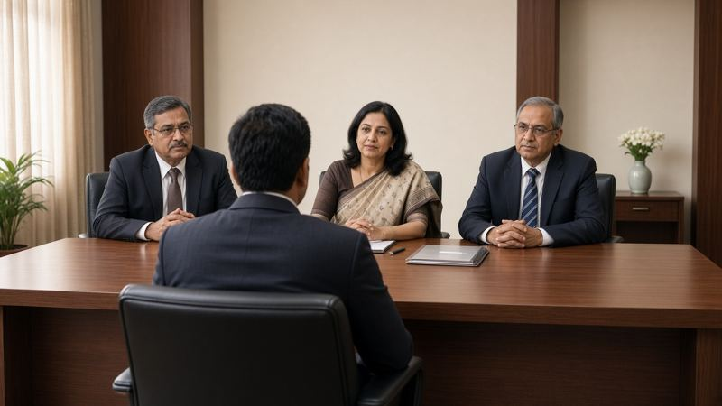
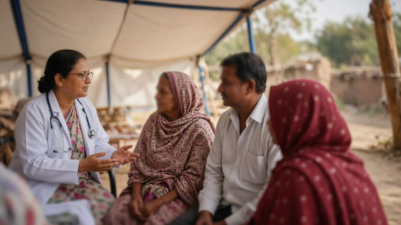
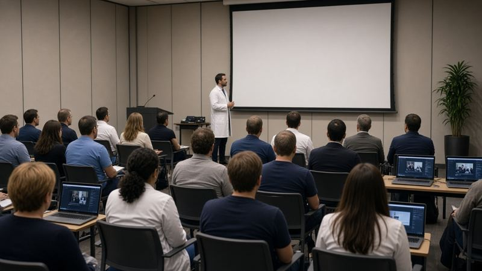

Prof. (Dr.) S.K. Mishra
Professor & Head, Forensic Medicine & Toxicology · Nehru Homoeopathic Medical College & Hospital, New Delhi
Prof. (Dr.) S.K. Mishra brings 26 years of professional experience, including 21 years of teaching, to homoeopathic education and practice. A graduate (BHMS, 2000) of K.G.K. Govt. Homoeopathic Medical College, Moradabad, he serves as a subject expert for UPSC, UPPSC and OPSC, and has contributed to the CBDC syllabus and teacher training as a Master Trainer under the National Commission for Homoeopathy. A Kayakalp assessor since 2017 and an inspector for MARBH, he has guided institutions towards quality and excellence. His writings span medical ethics, forensic science and lifestyle disorders, and he has spoken on medico-legal practice and homoeopathy at forums across India and abroad, including Lok Sabha TV and Sansad TV. Above all, he loves mentoring students, from their first year of BHMS to PhD, and created this portal to make reliable guidance approachable for the entire homoeopathy fraternity.
Guidance for BHMS students and budding practitioners on government careers, public health roles, hospital management, clinical practice and continuing education, to help propagate homoeopathy.
About Prof. (Dr.) S.K. Mishra
Qualification: B.H.M.S. (2000, 1st Division), K.G.K. Govt. Homoeopathic Medical College, Moradabad (Dr. B.R. Ambedkar University, Agra). Experience: 26 years professional, 21 years teaching.
Expert Panels & Appointments
- Subject Expert panel, Union Public Service Commission (UPSC) – various posts
- Subject Expert panel, Uttar Pradesh PSC (UPPSC) – Medical Officer
- Subject Expert panel, Odisha PSC (OPSC) – Lecturer & Medical Officer
- Subject Expert (FMT), syllabus review – Homoeopathic Education Board (HEB), NCH
- Subject Expert (FMT), construction of new CBDC syllabus – HEB, NCH
- Master Trainer in FMT for CBDC teacher training – HEB, NCH
- Inspector/Visitor for minimum standards of education in colleges across India – MARBH, NCH
- Member, Hearing Committee of MARBH, NCH
- KAYAKALP Assessor (Peer & External) since 2017 – Delhi State Health Mission; assessed many Delhi Govt. Allopathic and AYUSH hospitals
- Qualified NQAS Internal Assessor
- Expert member, committee of the Board of Homoeopathic System of Medicine on the Clinical Establishment Act (prepared the Board’s draft views)
University Examiner
UG examiner, paper setter and evaluator in FMT at 7 universities.
View universities
- Dr B.R. Ambedkar University, Agra – UG Examiner & Paper Setter (FMT)
- Rajasthan Ayurveda University, Jodhpur – UG Examiner (15 years)
- Nehru Homoeopathic Medical College (Delhi University) – UG Examiner, Paper Setter & Evaluator (17 years)
- Dr B.R. Sur Homoeopathic Medical College (I.P. University) – UG Examiner (16 years)
- Uttarakhand Ayurved University, Dehradun – UG Examiner & Evaluator
- West Bengal University of Health Sciences – UG Examiner
- Pt B.D. Sharma University of Health Sciences, Rohtak – UG Examiner & Paper Setter (FMT)
Areas of Research
- Project-in-charge, Life Style Disorder Project (since 2007)
Literary Work
- “What is EBM (Evidence Based Medicine) in Homoeopathy” – New Life Era, June 2015
- “Role of homoeopathy in type-2 diabetes mellitus with constitutional management” – Homoeopathic Heritage (peer-reviewed), Feb 2020
- “Efficacy of Stramonium in Endocrine Disorder: A Case Report” – Homoeopathic Heritage, April 2020
- “Application of Medical Ethics by Homoeo stalwarts in their practice” – National Journal of Homoeopathy (peer-reviewed), July 2020
- “Effectiveness of Dactylography over DNA Fingerprinting in the field of Forensic Medicine: An Overview” – Journal of Forensic Chemistry & Toxicology (AIIMS Delhi), Vol 7, No 2, July–Dec 2021, pp 61–63; co-authored with faculty of Dept. of FMT, AIIMS Delhi
- Book review of Forensic Medicine & Toxicology by Dr Anil Aggarwal (Director Professor, FMT, Maulana Azad Medical College) – Internet Journal of Forensic Medicine
- “Toxicological Symptomatology and its corroboration with proving record of Materia Medica Pura using Nux Vomica as reference drug” – Journal of Classical Homoeopathy, Vol 01 Issue 01, pp 55–59, 2024
Lectures Delivered
- Panelist, “Upcoming legislations in homoeopathy” – NHMC Alumni Association, 15 Dec 2019
- “Medicolegal importance of Identification: A forensic View” – HMAI unit Bihar, 17 & 24 May 2020
- “Knowledge of useful Legislations required for Homoeopathic Practitioner: Need of Hour” – Homoeopathy 360, 31 May 2020
- “Efficacy of Homoeopathy in the Life Style Disorders” – Homoeopathy 360, 14 July 2020
View all 13 lectures
- “How to prepare for UPSC or other Public Service Commission” – AIHSAYA, 9 Aug 2020
- Webinar: Therapeutic intervention in lifestyle disorders like DM & HT by homoeopathy – Parul University, 17 Sept 2020
- Kent Memorial Lecture: “Medical Negligence: Its Understanding & Applicability” – SDHA, 20 Sept 2020
- Guest Speaker: “Efficacy of Homeopathy in Post-covid Complications” – hosted by Dr Ravi (Mind Empowerer), 13 June 2021
- Delegate, LHMI Global Colloquium 2021 (international online CME), 10–12 Dec 2021
- Guest Speaker, YouTube live, Homoeo Health Clinic: “Precautions to be taken by Homoeopathic practitioner to avoid Medical Negligence”, 20 March 2022
- Guest Speaker, Homoeopathy World Community (international) I-opener session: “Medical Jurisprudence & Forensic Medicine in General Homeopathic Practice”, 27 Dec 2022
- Guest Speaker, SBL: “Role of Homeopathy in Diabetes Mellitus”, 25 Nov 2023
- Guest Speaker, Kerala Govt. (Ayushman Bhav programme): “Homoeopathic Management of Diabetes Mellitus”, 9 July 2024
Awards & Honours
- As Nodal Officer (Kayakalp), led the Institute to a Rs 3 lakh Commendation Prize from Govt. of NCT of Delhi under the Kayakalp Programme
- Felicitated by Hon’ble MLA for commendable work in the Pradhanmantri Swachchta Kayakalp Programme
- Outstanding Socio-Cultural Award (Art Video category), LHMI Global Colloquium 2021 (international)
- Felicitated by Homoeo Healers for contribution to Homoeopathy & Social Services, 12 Sept 2021
Media & Social
- Expert guest on Lok Sabha TV (COVID discussions, many times) and Delhi Up To Date
- Expert guest on Sansad TV on Eye Diseases
- Member, Vidyalaya Management Committee, Kendriya Vidyalaya Andrews Ganj, Delhi
- Featured by News18: “Meet the differently abled Doctor from Delhi who defied all odds to learn Zumba”
- Table tennis player and cricket all-rounder; active in college sports and cultural activities
- Mentors students from undergraduate to PhD level
About
Curated by Dr. Shiv Kumar Mishra, Prof. & HOD, Forensic Medicine & Toxicology, Nehru Homoeopathic Medical College & Hospital, New Delhi. Mission: make reliable guidance approachable to the entire homoeopathy fraternity.
PSC & Government Job Interviews

Posts such as Homoeopathic Medical Officer are advertised by state PSCs, DSSSB, CCRH and other bodies. Always read the official advertisement for eligibility, syllabus and pattern.
Typical interview areas
- Organon, philosophy and Materia Medica
- Repertory and case management
- Public health programmes and AYUSH integration
- Medico-legal duties and ethics
- Current affairs in health and AYUSH
Preparation strategy
- Collect the official notice and syllabus.
- Revise core subjects with standard texts.
- Practise previous papers from the recruiting body.
- Mock interviews; prepare your own case experiences.
Sample questions
- Why did you choose homoeopathy?
- Explain Hahnemann's concept of vital force.
- How would you select potency in an acute case?
- What are your duties in a medico-legal case at a dispensary?
- How can homoeopathy contribute to national health programmes?
Official sites
Public Health Services

Homoeopaths serve through AYUSH components of public health systems. Check each body's official site for current roles and vacancies.
- National Health Mission – AYUSH mainstreaming
- Ministry of AYUSH – National AYUSH Mission (NAM)
- CGHS – homoeopathic units
- ESIC
- State health/AYUSH departments
Management & Hospital Administration
- Pathways: MBA (Hospital/Healthcare Management), MHA, PG diplomas in hospital administration.
- Learn NABH accreditation standards: patient rights, infection control, HR, records.
- Key skills: quality management, MRD, procurement and condemnation (GFR), finance basics.
- Admission exams vary by institute; refer to official prospectuses.
Clinical Tips
Educational content only; not a substitute for professional judgement.
- Case-taking: record the patient's own words, modalities and mentals.
- Repertorisation: choose characteristic symptoms; verify with Materia Medica.
- Potency: match to susceptibility and sensitivity; reassess regularly.
- Follow-up: note changes against Hering's observations and record them.
- Documentation: dated, legible notes; informed consent.
- Medico-legal: maintain records, refer emergencies promptly, never issue certificates without examination.
Workshops & Webinars

Find CME, workshops and webinars through official sources: Ministry of AYUSH, NCH, CCRH, NHMC.
Upcoming events
Announcements will be posted here once verified.
Submit your event
Email the organiser name, title, date, mode and official link to rahul_shiv@rediffmail.com.
Contact
Dr. Shiv Kumar Mishra, Dept. of Forensic Medicine & Toxicology, Nehru Homoeopathic Medical College & Hospital, B Block, Defence Colony, New Delhi 110024.
Email: rahul_shiv@rediffmail.com
Instagram: @homeogram · YouTube: Homeo Gram · X: @homoeogram